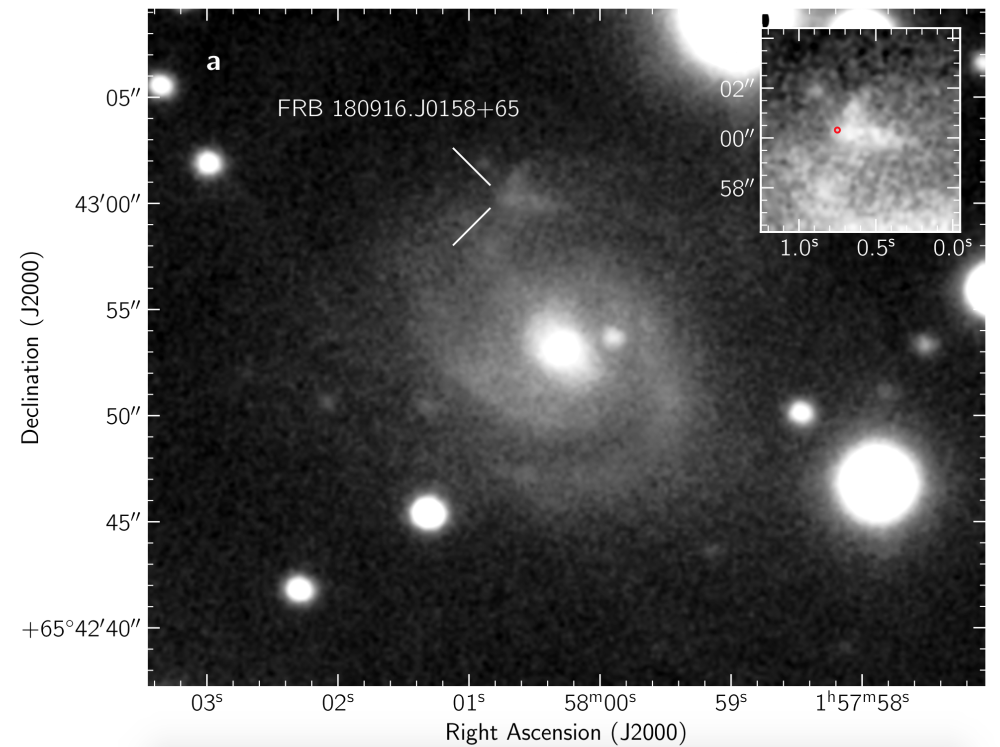

FRB 180916
Image from Marcote et al., 2020, Nature, 577, 190
Summary
- Detected by: CHIME
- FRB coordinates (RA, Dec): 01:58:00.75 +65:43:00.32 (J2000)
- Host coordinates (RA, Dec): 01:58:00.28 +65:42:53.0 (J2000)
- Redshift: 0.0337
- Observed DM: 348.76 pc cm-3
- Repeating: Yes
- References: 2020Natur.577..190M;
2020arXiv200110275T